四月二十五日 (一)
五時，就到 Urfa 的 octogar 了，天仍是黑。行出車站，的士司機說這麼早是未有公共巴士的，又用 20 TL 搭了的士。結果去到 Hotel Ugur，酒店大門關了，在外面等到七點幾，才有人來開門，初時還以為這酒店已經不再經營。
Şanlıurfa，光榮的 Urfa，是這裏現今正式的名稱，但人們仍然多數用 Urfa。我終於來到這個地方，先知 Abraham 出生在這裏的山洞，不同典籍中提到的 Ur Kaśdim，但真正所在地被推測了幾個地方，Urfa 的洞是其中一個，和 House of Virgin Mary 一樣，你有你相信，唔理得咁多。
先到 Hotel Ugur 是因為這裏的 Mr. Mustafa 可以安排 tour 去 Mount Nemrut，以及其他交通不便的地方，如 Gobekli Tepe。不過，一早到達，未見 Mustafa 只有職員上班，說他要黃昏才出現。
Hotel Ugur 其實是間好簡單的旅館，但就好多外地遊客會入住，所以來這裏也是為了容易遇到其他人一起 share tour 的費用。不過，我見，好像，沒有住客似的，初時還以為關閉了。
附近有很多地道食店，有一間叫 Zahter Kahvalti 出名吃早餐的，我就入去，這店裝修好靚好光鮮，而且也很多人吃早餐，店門有很多食物，但我不懂叫，亦沒有餐牌什麼，我一入內，只懂說 breakfast，然後就來了很多東西，我想這就是一個早餐了，實在有太多東西，但超好味的，尤其是那些我估是乳酪和蜜糖，以及那些麵包、橄欖、芝士等等，15 TL。其實都幾富貴，即係成 40 蚊港幣。
行去南面的城堡，城保關門，不知為什麼。城前的公園，這裏有魚池，以及神聖的 Cave of Abraham，魚池很美，其實整個公園都好好，好多當地人在這裏，魚池水好清，有好多魚，池旁有人賣魚糧，傳說你放的魚糧被一條大白魚吃就點點點，不過我沒有買。
還有個 visitor centre 要 1 TL 入場費，裏面有些 touch screen 玩，可以用來認識 Urfa，走時職員送了的一堆東西，有小冊子有 DVD。我問他博物館今天開不開，他說開，結果行到去是關門的，之後才知道，原來整個土耳其的博物館也關星期一。
Cave of Ibrahim (Abraham)，分男女部分，除鞋進入，其實只許看洞的好小部分，得間房仔，房仔有度窗，窗後就是洞，信徒十分虔誠走過去，祈禱跪下頭貼地。我站了一會就離開，cave 外的 Rizvaniye Cami 的庭園好靚。
天氣好熱，路過有些甜品店，躲進其中一間，竟然有冷氣，叫了樣叫做 silik 的東西，加雪糕，勁正，食完回去酒店躲。在大廰看看兩本大大的 Guest Book，因為沒事做，差不多看完所有人的留言 (只限中英文)。看完 guestbook 對 Mustafa 有很大的期望，因為留言大部分都讚到天上有地下無的樣子。
外面很熱，不知不覺睡著了，醒來大廳還是沒有人，很靜，再次出去逛，回到公園，在有樹蔭的長椅坐下，引來在旁的人搭訕，其中一位是由敘利亞來的，我問他們當中有沒有 kurd 卻沒有，一是 turk 一是 arab，我還以 Urfa 有好多 kurd。
Urfa 有很多乞丐，還有很多抱著嬰兒的人女、小孩在街上賣紙巾。之後我問人，原來這些是敘利亞的難民。
晚餐吃 Urfa 出名的 lahmacun，是薄餅一種，比較辣，我叫的是羊肉，而且好多塊，吃不完。
回到 hotel 阿 Mustafa 生坐在大廳他的工作桌，意外地，他比想像中冷漠，問多問都叫我自己睇 guestbook 話裏面有寫。因為沒有其他遊客，去 Mt. Nemrut 的 tour 要負全費 450 TL，而去 Gobekli Tepe 也要 100 TL。
我沒想太多就決定照去，因為我來就是要去，沒有其他遊客這就真是料不到，但真是沒法。
Mustafa 似是外冷內熱的人，在廳坐著和他傾談的話會漸漸不同。在電視見到土耳其邊境地方 Kilis 被炸，然後又有什麼地方有事。剛巧談到我之後想去 Diyarbakır，Mustafa 就說，你現在不能去了，就數小時前那裏有事發生。不過 Haran、Madin 仍沒問題。
真是突然好多事情失去預算。
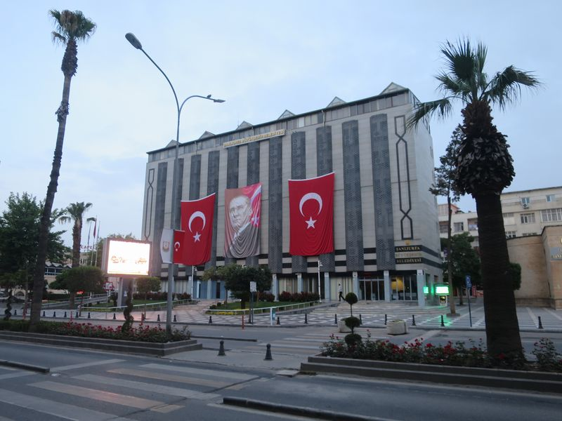
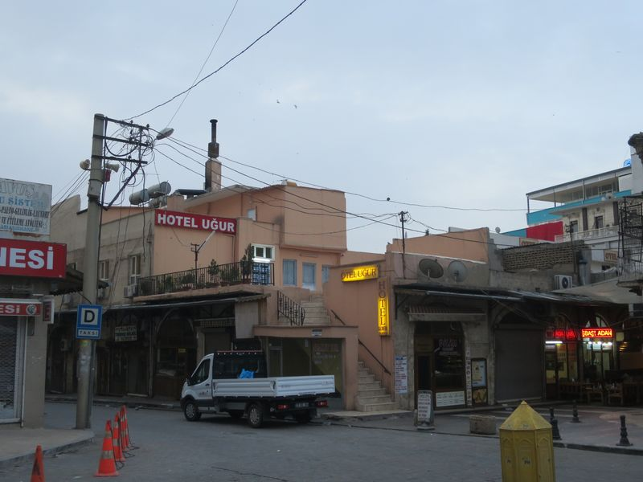
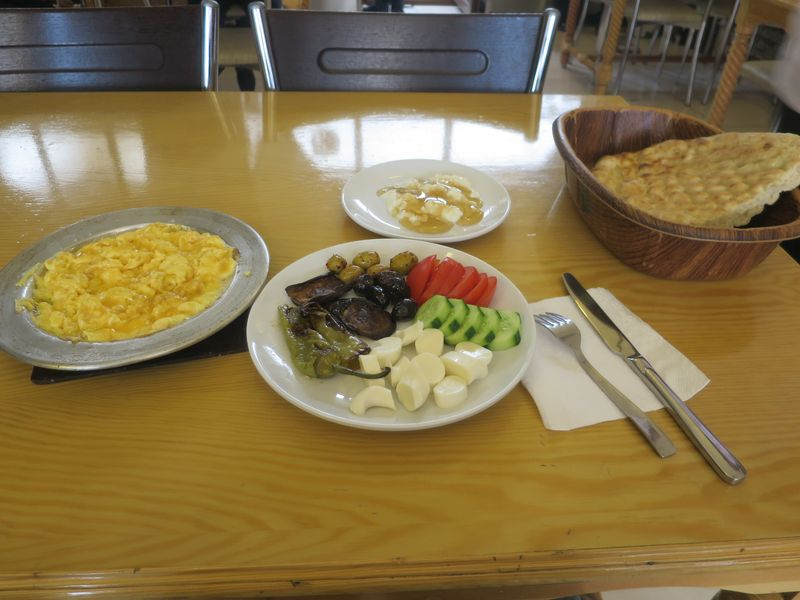
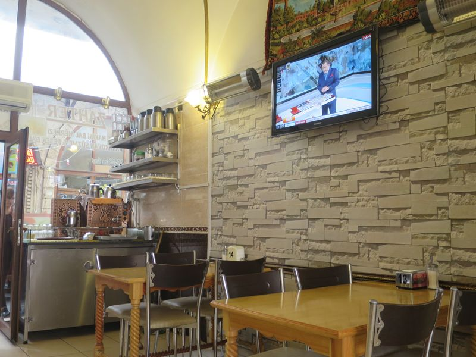
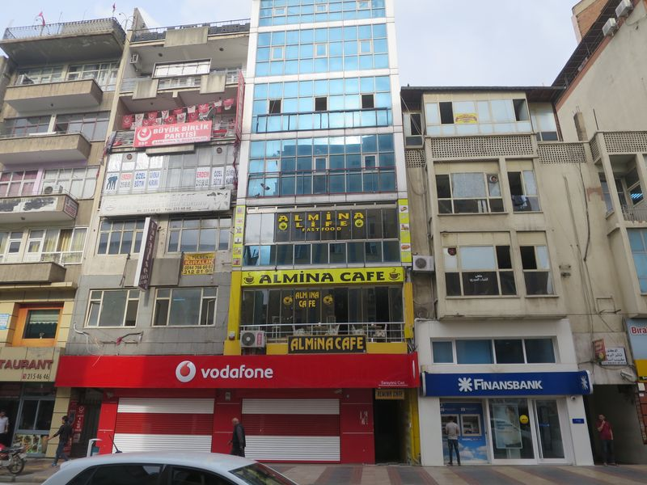
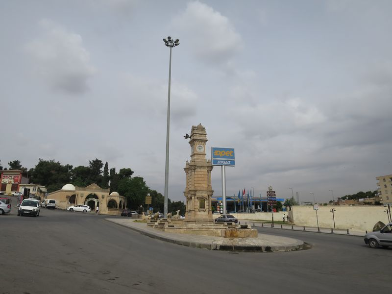
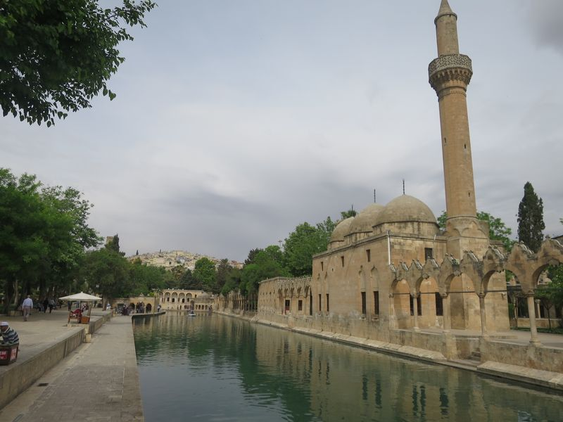
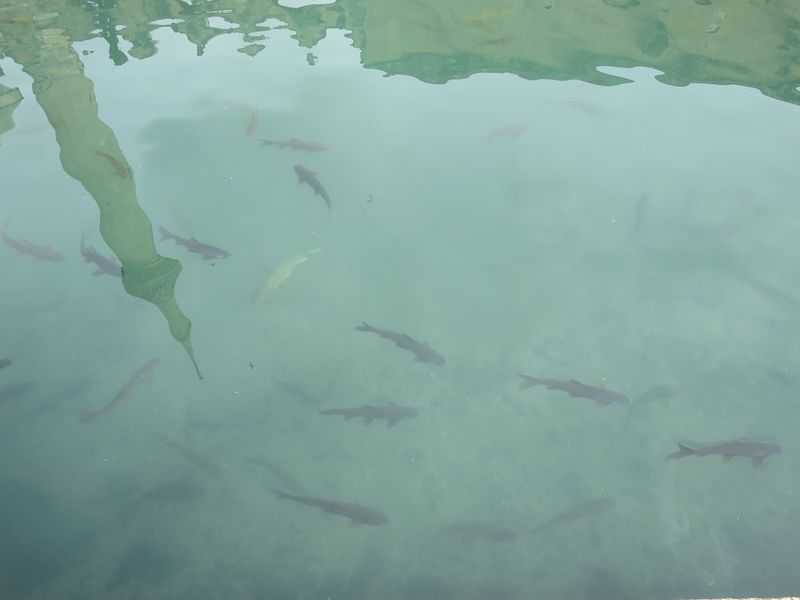
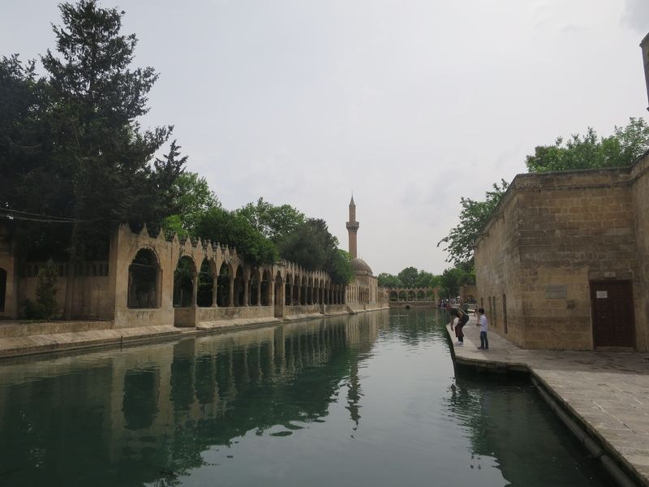
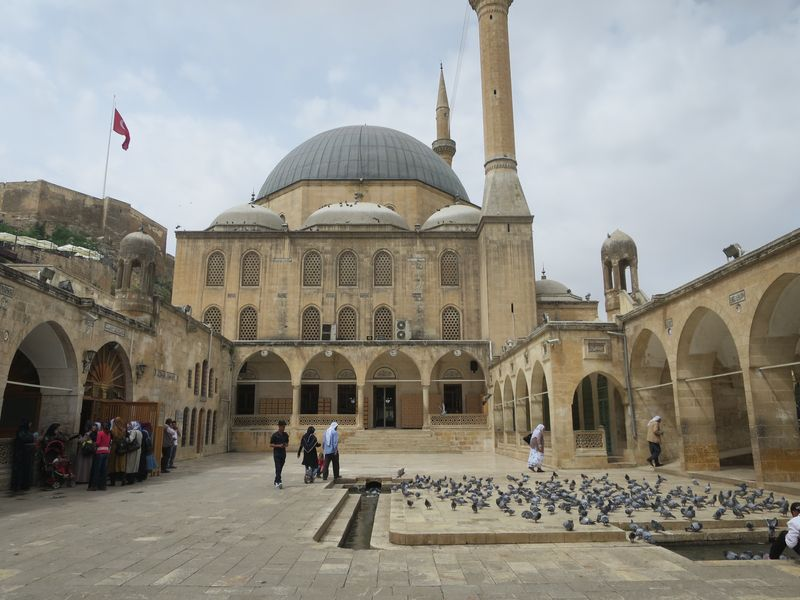
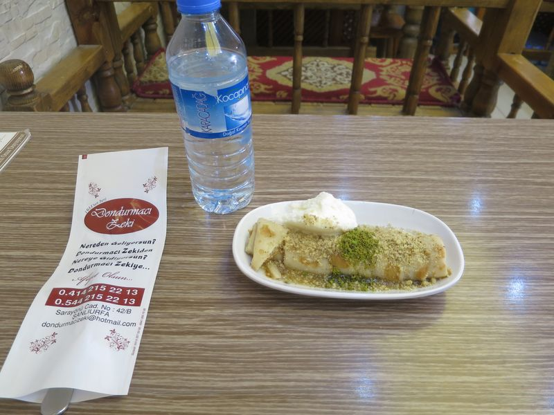
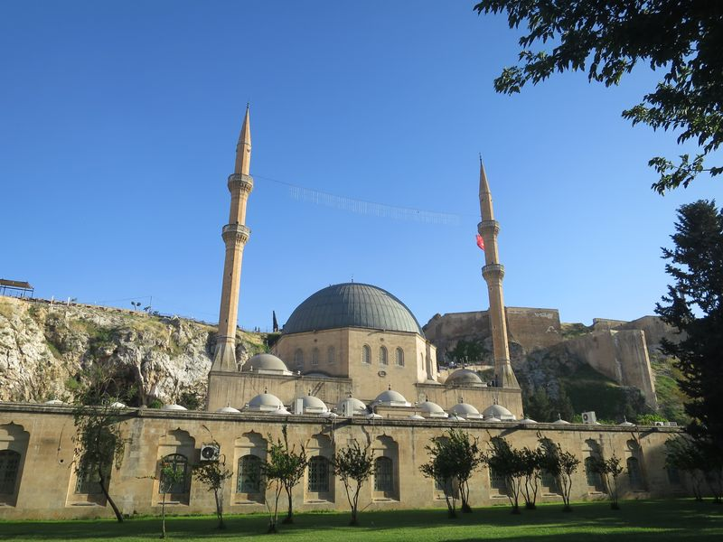
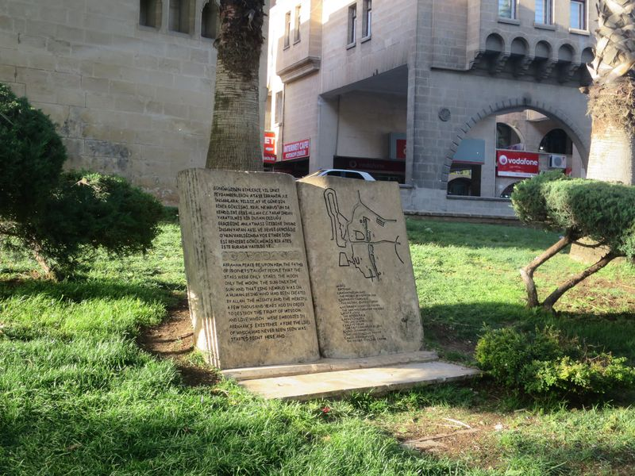
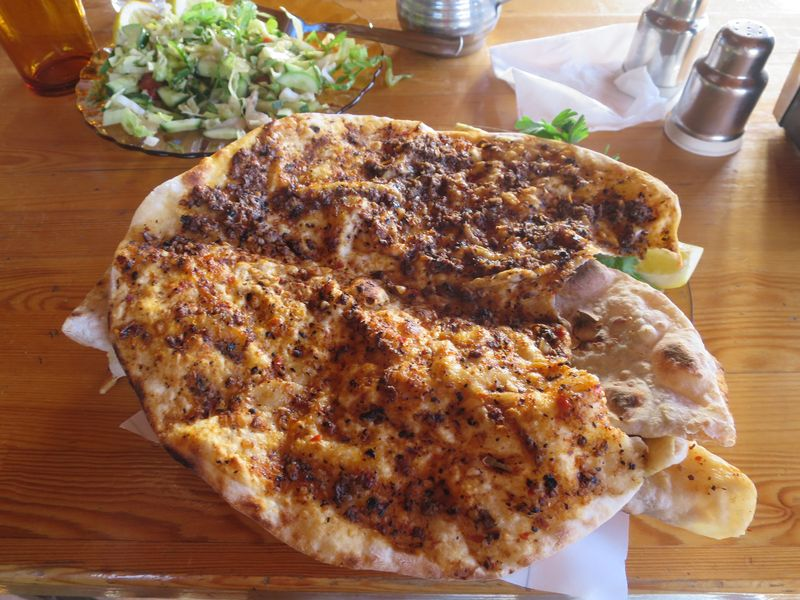
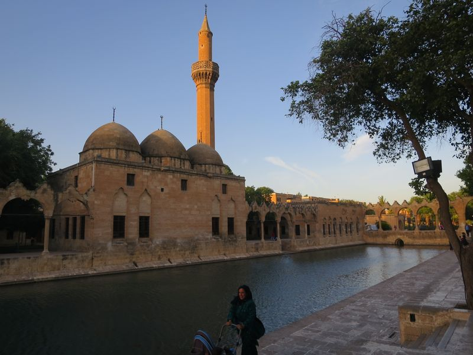
2016 Turkey
❮ Previous
Next ❯